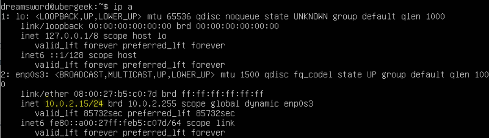
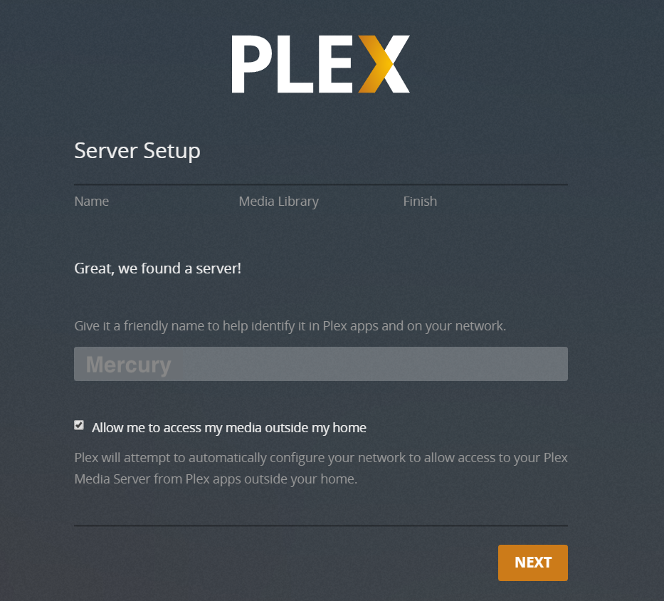
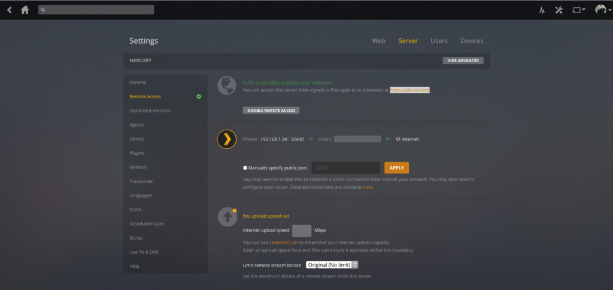
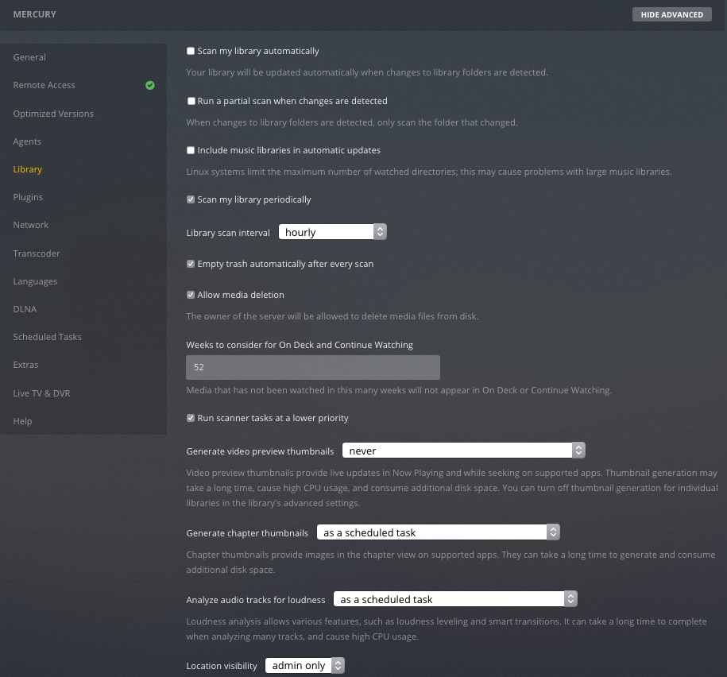
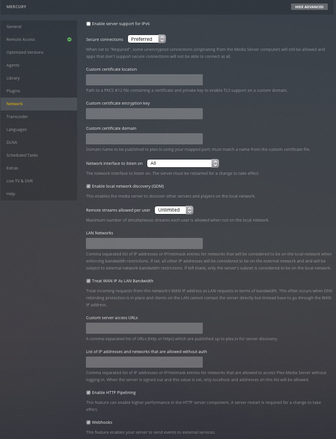
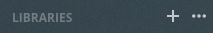
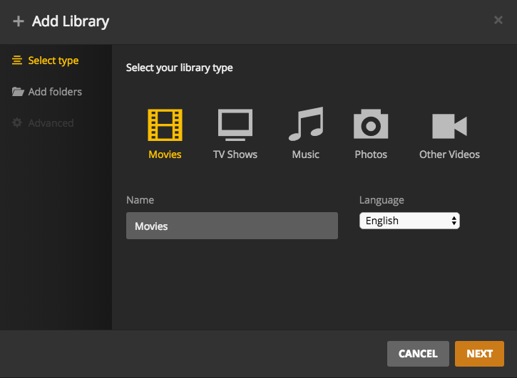
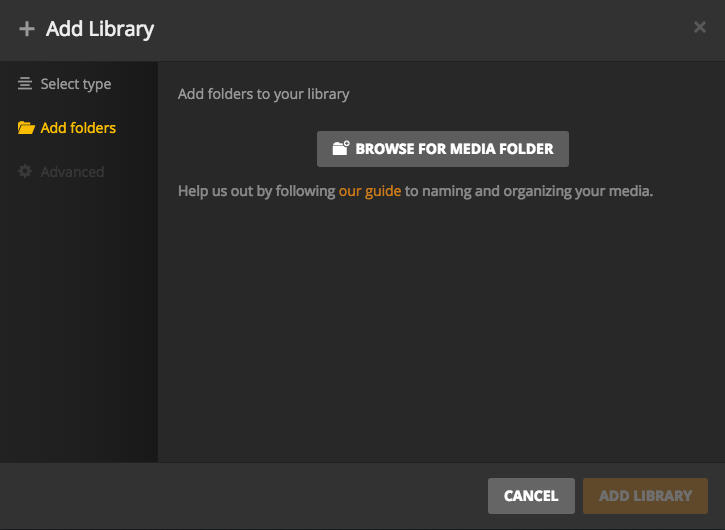

Today we will be continuing the build of our media server, last time we learned how to setup a Virtual Machine with VirtualBoxand how to setup Ubuntu OS onto the new
VM. In case you missed it, you can have a look at it here.
Lets get started adding software to our media server, once you have Ubuntu installed as per the previous tutorial you can either connect to it by using the window that VirtualBox opens or by using SSH to connect to the IP of the
VM, I prefer to use the SSH option as it allows you to copy and past the code snippets below directly into the command line where otherwise you would have had to write out the whole command, so you will need to get a software
called Putty if you are using windows or if you are on Mac or Linux you can just use your terminal.
To connect to your VM you will need to know what the IP is, to do this (in the VirtualBoxVM window) run this command:
ip a
You will get a response simmilar to the screenshot below, however your ip (highlighted part) might be different from mine.

Output of ip a
Once you know your IP you can type it into the Putty window and connect to it or if you are use Terminal (Mac / Linux) just run - ssh {your Username}@{your ip}
First lets tell Ubuntu that it should get all the new updates to its repositories by running:
sudo apt-get update
Once it is all done we can start by installing our media server software, first off is Plex, it is used as the hart of our server that will be responsible for organising your Movies, TV Shows,
Music and Photos, Plex has many more amazing features but we will only covering a few of these in the tutorial, if you would like to know more of what Plex is capable of you can see the list here.
Download the Plex software by running (you can get the new version on there website, as of this writing the version is 1.13.5.5332:
Let us create some folders for use in Plex, this is to keep things neat and tindy and to help Plex better manage your media, lets create some folders:
mkdir /media/Movies
mkdir /media/'TV Shows'
You can add more like photos, music or whatever you like by changing the last part after the / to something else e.g /media/Photos. Note: if you want a space in your name add single quotes to it.
Now we have the media server up and running, so let us configure it first so that you can start using it.
In your browser go to (we already got the ip from a previouse step): http://{ServerIP}:32400/web/index.html.
This page will ask you to sign in, if you do not already have a plex account you can click the sign up link on the page, once you have an account you can return here to sign in.
The next screen is the setup wizzard, Click "GOT IT!" to continue, now it will show you a list of servers, with a randomly generated name. Give it a friendly name, I called mine Mercury because I like to follow
a naming convention, all the devices in my home are named after planets in the solar system, and then click "NEXT".

Setting up Plex
The next screen will ask us to create libraries, you can create any you like depending on the media you have, for this tutorial we will create two - Movies & TV Shows, for now click "DONE" as we will add the Libraries later on. NOTE: all the media that is created on this server must be owned by you, I do not condone any illegally gotten media.
You now have your first media server with Plex setup, however it is only accesable inside of your network, we still need to allow access to it form outside your network, this will allow you to view your media from anyware you have access
to the internet or in my case share media with family members like photos, family videos and the odd digital Movie, we are going to do it securly so we do not compromise your internal network.
Lets get started in setting up access, Click the Settings icon (top right) → "Server" (top) → "Remote Access" (left) and insure that Remote Access is enabled, if not turn it on and click "SAVE CHANGES" at the bottom of the page. You will
see a green notification at the top of the page saying "Fully accessible outside your network".

Configuring remote access
If you do not see this you probably need to open ports on your router, please visit Portfoward for detailed instructions on each router.
Next we will configure the rest of the server so that it works optimally. On the same screen click on library (left) and set the following:
"Scan my library periodically": enabled
"Library scan interval" (you can set this longer if you like): hourly
"Empty trash automatically after every scan": enabled
"Allow media deletion": enabled
"Weeks to consider for On Deck and Continue Watching": 52
"Generate video preview thumbnails": never
"Generate chapter thumbnails": as a scheduled task
Click "SAVE CHANGES".

Configuring your plex settings
Next we make chages to the Transcoder (left) and set the following:
"Transcoder temporary directory": /transcode
"Transcoder default throttle buffer": 1000
"Use hardware acceleration when available": disabled
"Maximum simultaneous video transcode": Unlimited
Click "SAVE CHANGES".

Configuring your plex settings
Next we make changes to the DLNA (left) and set the following:
"Enable the DLNA server": disabled
"DLNA server timeline reporting": disabled
Click "SAVE CHANGES".
Now let us add some media to our newly setup Plex, we will create two Libraries as mentioned before, Movies and TV Shows, to do this we are going to do the following:
In the main Plex screen (Home icon on the top left), click "+" next to "LIBRARIES".

In the "Add Library" window, select "Movies" and click "NEXT".

Creating your first library
Click "BROWSE FOR MEDIA FOLDER".

Add a folder for your library
In second column of the "Add Folder" window, select media, then Movies, and then click the "ADD" button.
Once that is done do the same for TV Shows, but this time selecting type as "TV Shows" and during the "Browse For Media Folder, select media, then TV Shows.
You can now access your media server via https://plex.tv/web or by installing the app on your mobile device or computer and sign in on the device and it will pick up all the media you ave added to your server.
To add media you can just copy the media into the respective folders you have setup during the "Add Libraries" part, it will automatically grab posters and discriptions of each item except for your personal media this you will have to
add the details yourself.
Now that was a lot of info, but it is all nesessary to get your media center working optimally, next time we will look at automation software for scraping Movies or TV Shows however this is for educational purposes to show what is possible
with software and should not be used to obtain Movies or TV Shows illegally, we shall start on that in PART 3.